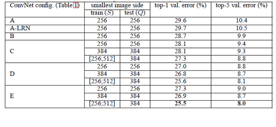

原文连接:https://www.cnblogs.com/wj-1314/p/11502563.html
2014年，牛津大学计算机视觉组（Visual Geometry Group）和 Google DeepMind 公司的研究员一起研发了新的深度卷积神经网络：VGGNet ，并取得了ILSVRC2014比赛分类项目的第二名（第一名是GoogLeNet，也是同年提出的）和定位项目的第一名。
VGGNet探索了卷积神经网络的深度与其性能直接的关系，通过反复堆叠 3*3 的小型卷积核和 2*2 的最大池化层，VGGNet成功的构筑了16~19层深的卷积神经网络。VGGNet相比之前的 state-of-the-art 的网络结构，错误率大幅下降，并取得了 ILSVRC 2014比赛分类项目的第二名和定位项目的第一名。同时 VGGNet的拓展性很强，迁移到其他图片数据上的泛化性非常好。VGGNet的结构非常简洁，整个网络都使用了同样大小的卷积核尺寸（3*3）和最大池化尺寸（2*2）。到目前为止，VGGNet依然经常被用来提取图像特征。VGGNet训练后的模型参数在其官方网站上开源了，可用来在 domain specific 的图像分类任务上进行再训练（相当于提供了非常好的初始化权重），因此被用在了很多地方。
VGGNet 可以看成是加深版本的AlexNet，都由卷积层，全连接层两大部分构成。VGGNet探索了卷积神经网络的深度与其性能之间的关系。成功的构筑了16~19层深的卷积神经网络，证明了增加网络的深度能够在一定程度上影响网络最终的性能，使错误率大幅下降。
一，VGG的特点
下面是VGG的结构图

1、结构简洁
VGG由5层卷积层、3层全连接层、softmax输出层构成，层与层之间使用max-pooling（最大池化）分开，所有隐层的激活单元都采用ReLU函数。
2、小卷积核和多卷积子层
VGG使用多个较小卷积核（3x3）的卷积层代替一个卷积核较大的卷积层，一方面可以减少参数（而且保持了相同的感受野），另一方面相当于进行了更多的非线性映射，可以增加网络的拟合/表达能力。
小卷积核是VGG的一个重要特点，虽然VGG是在模仿AlexNet的网络结构，但没有采用AlexNet中比较大的卷积核尺寸（如7x7），而是通过降低卷积核的大小（3x3），增加卷积子层数来达到同样的性能（VGG：从1到4卷积子层，AlexNet：1子层）。
VGG的作者认为两个3x3的卷积堆叠获得的感受野大小，相当一个5x5的卷积；而3个3x3卷积的堆叠获取到的感受野相当于一个7x7的卷积。这样可以增加非线性映射，也能很好地减少参数（例如7x7的参数为49个，而3个3x3的参数为27），如下图所示：
3、小池化核
相比AlexNet的3x3的池化核，VGG全部采用2x2的池化核。
4、通道数多
VGG网络第一层的通道数为64，后面每层都进行了翻倍，最多到512个通道，通道数的增加，使得更多的信息可以被提取出来。
5、层数更深、特征图更宽
由于卷积核专注于扩大通道数、池化专注于缩小宽和高，使得模型架构上更深更宽的同时，控制了计算量的增加规模。
6、全连接转卷积（测试阶段）
这也是VGG的一个特点，在网络测试阶段将训练阶段的三个全连接替换为三个卷积，使得测试得到的全卷积网络因为没有全连接的限制，因而可以接收任意宽或高为的输入，这在测试阶段很重要。
如本节第一个图所示，输入图像是224x224x3，如果后面三个层都是全连接，那么在测试阶段就只能将测试的图像全部都要缩放大小到224x224x3，才能符合后面全连接层的输入数量要求，这样就不便于测试工作的开展。
而“全连接转卷积”，替换过程如下：
例如7x7x512的层要跟4096个神经元的层做全连接，则替换为对7x7x512的层作通道数为4096、卷积核为1x1的卷积。
这个“全连接转卷积”的思路是VGG作者参考了OverFeat的工作思路，例如下图是OverFeat将全连接换成卷积后，则可以来处理任意分辨率（在整张图）上计算卷积，这就是无需对原图做重新缩放处理的优势。
二，VGG的网络结构简洁
VGGNet 中全部使用了 3*3 的卷积核和2*2的池化核，通过不断加深网络结构来提升性能。下图为VGGNet各级别的网络结构图（训练时，输入是大小为224*224的RGB图像）：
上图是来自论文《Very Deep Convolutional Networks for Large-Scale Image Recognition》（基于甚深层卷积网络的大规模图像识别）的VGG网络结构，正是在这篇论文中提出了VGG，在这篇论文中分别使用了A， A-LRN，B， C， D， E这六种网络结构进行测试，这六种网络结构相似，都有5层卷积层，3层全连接层组成，其中区别在于每个卷积层的子层数量不同，从A到E依次增加（子层数量从1到4），总的网络深度从11层到19层（添加的层以粗体显示），表格中的卷积层参数表示为“conv（感受野大小）-通道数”，例如 con3-128，表示使用3*3的卷积核，通道数为128,。
在下图所示为每一级别的参数量，从11 层的网络一致到19层的网络都有详尽的性能测试。虽然从A到E每一级网络逐渐变深，但是网络的参数量并没有增长很多，这是因为参数量主要都消耗在最后3个全连接层。前面的卷积部分虽然很深，但是消耗的参数量不大，不过训练比较耗时的部分依然是卷积，因其计算量比较大。这其中的D，E也即是我们常说的 VGGNet-16和 VGGNet-19。C很有意思，相比 B多了几个 1*1 的卷积层，1 *1 的卷积的意义主要在于线性变换，而输入通道数和输出通道数不变，没有发生降维。
VGGNet 拥有5段卷积，每一段内有2~3个卷积层，同时每段尾部会连接一个最大池化层用来缩小图片尺寸。每段内的卷积核数量一样，越靠后的段的卷积核数量越多：64-128-256-512-512。其中经常出现多个完全一样的 3*3 的卷积层堆叠在一起的情况，这其实是非常有用的设计。如下图所示，两个3*3 的卷积层串联相当于1个5*5 的卷积层，即一个像素会跟周围 5*5 的像素产生关联，可以说感受野大小为5*5。而3个3*3 的卷积层串联的效果则相当于1个7*7的卷积层。除此之前，3个串联的3*3的卷积层，拥有比1个7*7的卷积层更小的参数量，之后后者的（3*3*3/7*7）=55%。最重要的是，3个3*3的卷积层拥有比1个7*7的卷积层更多的非线性变换（前者可以使用三次 ReLU激活函数，而后者只有一次），使得CNN 对特征的学习能力更强。
VGGNet 在训练时有一个小技巧，先训练级别A的简单网络，再复用 A 网络的权重来初始化后面的几个复杂模型，这样训练收敛的速度更快。在预测时，VGG采用 Multi-Scale的方法，将图像 scale 到一个尺寸Q，并将图片输入卷积网络计算。然后在最后一个卷积层使用滑动窗口的方式进行分类预测，将不同窗口的分类结构平均，再将不同尺寸 Q的结果平均得到最后结果，这样可提高图片数据的利用率并提升预测准确率。同时在训练中，VGGNet 还使用了 Multi-Scale 的方法做数据增强，将原始图像缩放到不同尺寸 S，然后再随机裁剪 224*224 的图片，这样能增加很多数据量，对于防止模型过拟合有很不错的效果。实践中，作者令 S 在[256, 512] 这个区间内取值，使用 Multi-Scale 获得多个版本的数据，并将多个版本的数据合在一起进行训练。下图所示为 VGGNet 使用 Multi-Scale训练时得到的结果，可以看到D和E都可以达到 7.5% 的错误率。最终提高到 ILSVRC 2014 的版本是仅使用 Single-Scale 的6个不同等级的网络与 Multi-Scale 的D网络的融合，达到了7.3% 的错误率。不过比赛结束后作者发现只融合 Multi-Scale 的D和E 可以达到更好的效果，错误率达到 7.0%，再使用其他优化策略最终错误率可达 6.8%左右，非常接近同年的冠军 Google InceltionNet，同时，作者在对比各级网络时总结出以下几个观点。
1、LRN层无性能增益（A-LRN）
VGG作者通过网络A-LRN发现，AlexNet曾经用到的LRN层（local response normalization，局部响应归一化）并没有带来性能的提升，因此在其它组的网络中均没再出现LRN层。
2、随着深度增加，分类性能逐渐提高（A、B、C、D、E）
从11层的A到19层的E，网络深度增加对top1和top5的错误率下降很明显。越深的网络效果越好。
3、多个小卷积核比单个大卷积核性能好（B）
VGG作者做了实验用B和自己一个不在实验组里的较浅网络比较，较浅网络用conv5x5来代替B的两个conv3x3，结果显示多个小卷积核比单个大卷积核效果要好。1*1 的卷积也是很有效的，但是没有 3*3 的卷积好，大一些的卷积核可以学习更大的空间特征。
A、A-LRN、B、C、D、E这6种网络结构的深度虽然从11层增加至19层，但参数量变化不大，这是由于基本上都是采用了小卷积核（3x3，只有9个参数），这6种结构的参数数量（百万级）并未发生太大变化，这是因为在网络中，参数主要集中在全连接层。
经作者对A、A-LRN、B、C、D、E这6种网络结构进行单尺度的评估，错误率结果如下：

VGGNet 训练时使用了GPU 计算，但是，作者训练每个网络耗时 2~3 周才可以训练完。因此我们这不直接使用 ImageNet 数据训练一个 VGGNet ，而是采用跟 上文中AlexNet 一样的方式：构造出VGGNet 网络结构，并评测其 forward（inference）耗时和backward（training）耗时。（tensorflow学习笔记——AlexNet）
三，VGG网络结构详情——以VGG16为例
以网络结构D（VGG16）为例，介绍其处理过程如下，请对比上面的表格和下方这张图，留意图中的数字变化，有助于理解VGG16的处理过程：
（此图是盗取网上吴恩达老师的笔记，侵删）
详解如下：
- 1、输入224x224x3的图片，经64个3x3的卷积核作两次卷积+ReLU，卷积后的尺寸变为224x224x64
- 2、作max pooling（最大化池化），池化单元尺寸为2x2（效果为图像尺寸减半），池化后的尺寸变为112x112x64
- 3、经128个3x3的卷积核作两次卷积+ReLU，尺寸变为112x112x128
- 4、作2x2的max pooling池化，尺寸变为56x56x128
- 5、经256个3x3的卷积核作三次卷积+ReLU，尺寸变为56x56x256
- 6、作2x2的max pooling池化，尺寸变为28x28x256
- 7、经512个3x3的卷积核作三次卷积+ReLU，尺寸变为28x28x512
- 8、作2x2的max pooling池化，尺寸变为14x14x512
- 9、经512个3x3的卷积核作三次卷积+ReLU，尺寸变为14x14x512
- 10、作2x2的max pooling池化，尺寸变为7x7x512
- 11、与两层1x1x4096，一层1x1x1000进行全连接+ReLU（共三层）
- 12、通过softmax输出1000个预测结果
以上就是VGG16（网络结构D）各层的处理过程，A、A-LRN、B、C、E其它网络结构的处理过程也是类似，执行过程如下（以VGG16为例）：
从上面的过程可以看出VGG网络结构还是挺简洁的，都是由小卷积核、小池化核、ReLU组合而成。其简化图如下（以VGG16为例）：（为了方便理解，盗图：https://my.oschina.net/u/876354/blog/1634322）

最后进行个小结：
- 1、通过增加深度能有效地提升性能；
- 2、最佳模型：VGG16，从头到尾只有3x3卷积与2x2池化，简洁优美；
- 3、卷积可代替全连接，可适应各种尺寸的图片
四，VGG的TensorFlow实现
下面就开始实现 VGGNet-16 ，也就是上面的版本D。
VGGNet-16包含很多层的卷积，因此我们先写一个函数 conv_op，用来创建卷积层并把本层的参数存入参数列表。先来看 conv_op 函数的输入， input_op 是输入的 tensor，name 是这一层的名称，kh 是 kernel height 即卷积核的高，kw 是 kernel width 即卷积核的宽，n_out 是卷积核数量即输出通道数， dh是步长的高，dw是步长的宽，p是参数列表。下面使用 get_shape()[-1].value 获取输入 Input_op 的通道数，比如输入图片的尺寸 224*224*3 中最后的那个3，然后使用 tf.name_scope(name) 设置 scope。我们的kernel （即卷积核参数）使用 tf.get_variable 创建，其中shape 就是 [kh, kw, n_in, n_out] 即 【卷积核的高，卷积核的宽，输入通道数，输出通道数】，同时使用 tf.contrib.layers.xavier_initializer_conv2d() 做参数初始化，Xavier初始化方法我们实现过，所以这里不做赘述。接着使用 tf.nn.conv2d 对 input_op 进行卷积处理，卷积核即为 kernel，步长是 dh*dw，padding模式设为 SAME，biases使用 tf.constant 赋值为0，再使用 tf.Variable将其转成可训练的参数。我们使用 tf.nn.bias_add 将卷积结果 conv 和 bias 相加，再使用 tf.nn.relu 对其进行非线性处理得到 activation。最后将创建卷积层时用到的参数 kernel 和 biases 添加进参数列表 p，并将卷积层的输出 activation 作为函数的结果返回。
def conv_op(input_op, name, kh, kw, n_out, dh, dw, p):
n_in = input_op.get_shape()[-1].value
with tf.name_scope(name) as scope:
kernel = tf.get_variable(scope + 'w',
shape=[kh, kw, n_in, n_out], dtype=tf.float32,
initializer=tf.contrib.layers.xavier_initializer_conv2d())
conv = tf.nn.conv2d(input_op, kernel, (1, dh, dw, 1),
padding='SAME')
bias_init_val = tf.constant(0.0, shape=[n_out], dtype=tf.float32)
biases = tf.Variable(bias_init_val, trainable=True, name='b')
z = tf.nn.bias_add(conv, biases)
activation = tf.nn.relu(z, name=scope)
p += [kernel, biases]
return activation
下面定义全连接层的创建函数 fc_op。一样是先获取输入 Input_op的通道数，然后使用 tf.get_variable 创建全连接层的参数，只不过参数的维度只有两个，第一个维度为输入的通道数 n_in，第二个维度为输出的通道数 n_out。同样，参数初始化方法也使用 xavier_initializer。这里 biases不再初始化为0，而是赋予一个较小的值0.1以避免 dead neuron。然后使用 tf.nn.relu_layer 对输入变量 Input_op与 kernel 做矩阵乘法并加上 biases，再做ReLU非线性变换得到 activation。最后将这个全连接层用到参数 kernel，biases 添加到参数列表 p，并将 activation 作为函数结果返回。
def fc_op(input_op, name, n_out, p):
n_in = input_op.get_shape()[-1].value
with tf.name_scope(name) as scope:
kernel = tf.get_variable(scope + 'w',
shape=[n_in, n_out], dtype=tf.float32,
initializer=tf.contrib.layers.xavier_initializer())
biases = tf.Variable(tf.constant(0.1, shape=[n_out],
dtype=tf.float32), name='b')
activation = tf.nn.relu_layer(input_op, kernel, biases, name=scope)
p += [kernel, biases]
return activation
再定义最大池化层的创建函数 mpool_op。这里直接使用 tf.nn.max_pool，输入即为 input_op，池化尺寸为 kh*kw，步长为 dh*dw，padding模式为 SAME。
def mpool_op(input_op, name, kh, kw, dh, dw):
return tf.nn.max_pool(input_op, ksize=[1, kh, kw, 1],
strides=[1, dh, dw, 1],
padding='SAME',
name=name)
完成了卷积层，全连接层和最大池化层的创建函数，接下来就开始创建 VGGNet-16的网络结构。VGGNet-16 主要分为6个部分，前5段为卷积网络，最后一段是全连接网络。我们定义创建 VGGNet-16 网络结构的函数 inference_op，输入有 Input_op 和keep_prob，这里的 keep_prob 是控制 dropout 比率的一个 placeholder。第一步先初始化参数列表 p。然后创建第一段卷积网络，这一段正如网络结构图所示，由两个卷积层和一个最大池化层构成。我们使用前面写好的函数 conv_op，mpool_op 来创建他们。这两个卷积层的卷积核的大小都是 3*3，同时卷积核数量（输出通道数）均为64，步长为1*1，全像素扫描。第一个卷积层的输入 input_op 的尺寸为 224*224*3，输出尺寸为 224*224*64；而第二个卷积层的输入输出尺寸均为 224*224*64。卷积层后的最大池化层则是一个标准的 2*2 的最大池化，将输出结果尺寸变为了 112*112*64。
def inference_op(input_op, keep_prob):
p = []
conv1_1 = conv_op(input_op, name='conv1_1', kh=3, kw=3, n_out=64,
dh=1, dw=1, p=p)
conv1_2 = conv_op(conv1_1, name='conv1_2', kh=3, kw=3, n_out=64,
dh=1, dw=1, p=p)
pool1 = mpool_op(conv1_2, name='pool1', kh=2, kw=2, dw=2, dh=2)
第二段卷积网络和第一段非常类似，同样是两个卷积层加一个最大池化层，两个卷积层的卷积核尺寸也是 3*3，但是输出通道数变为128，是以前的两倍，最大池化层则和前面保持一致，因此这一段的卷积网络的输出尺寸变为 56*56*128 。
conv2_1 = conv_op(pool1, name='conv2_1', kh=3, kw=3, n_out=128,
dh=1, dw=1, p=p)
conv2_2 = conv_op(conv2_1, name='conv2_2', kh=3, kw=3, n_out=128,
dh=1, dw=1, p=p)
pool2 = mpool_op(conv2_2, name='pool2', kh=2, kw=2, dw=2, dh=2)
接下来是第三段卷积网络，这里有三个卷积层和一个最大池化层。3个卷积层的卷积核大小依然是 3*3，但是输出通道数增长为 256，而最大池化层保持不变，因此这一段卷积网络的输出尺寸为 28*28**256。
conv3_1 = conv_op(pool2, name='conv3_1', kh=3, kw=3, n_out=256,
dh=1, dw=1, p=p)
conv3_2 = conv_op(conv3_1, name='conv3_2', kh=3, kw=3, n_out=256,
dh=1, dw=1, p=p)
conv3_3 = conv_op(conv3_2, name='conv3_3', kh=3, kw=3, n_out=256,
dh=1, dw=1, p=p)
pool3 = mpool_op(conv3_3, name='pool3', kh=2, kw=2, dw=2, dh=2)
第四段卷积网络也是3个卷积层加上一个最大池化层。到目前为止， VGGNet-16 的每一段卷积网络都会将图像的边长缩小一半，但是将卷积输出通道数翻倍。这样图像面积缩小到 1/4，输出通道数变为2倍，因此输出 tensor的总尺寸每次缩小一半。这一层就是将卷积输出通道数增加到512，但是通过池化将图片缩小为14*14.
conv4_1 = conv_op(pool3, name='conv4_1', kh=3, kw=3, n_out=512,
dh=1, dw=1, p=p)
conv4_2 = conv_op(conv4_1, name='conv4_2', kh=3, kw=3, n_out=512,
dh=1, dw=1, p=p)
conv4_3 = conv_op(conv4_2, name='conv4_3', kh=3, kw=3, n_out=512,
dh=1, dw=1, p=p)
pool4 = mpool_op(conv4_3, name='pool4', kh=2, kw=2, dw=2, dh=2)
最后一层卷积网络有所变化，这里卷积输出的通道数不再增加，继续维持在512.最后一段卷积网络同样是3个卷积层加一个最大池化层，卷积核尺寸为3*3，步长为 1*1，池化层尺寸为 2*2，步长为 2*2。因此到这里输出的尺寸变为 7*7*512。
conv5_1 = conv_op(pool4, name='conv5_1', kh=3, kw=3, n_out=512,
dh=1, dw=1, p=p)
conv5_2 = conv_op(conv5_1, name='conv5_2', kh=3, kw=3, n_out=512,
dh=1, dw=1, p=p)
conv5_3 = conv_op(conv5_2, name='conv4_3', kh=3, kw=3, n_out=512,
dh=1, dw=1, p=p)
pool5 = mpool_op(conv5_3, name='pool5', kh=2, kw=2, dw=2, dh=2)
我们将第五段卷积网络的输出结果进行扁皮化，使用 tf.reshape 函数将每个样本化为长度为 7*7*512=25088 的一维长度。
# 扁平化
shp = pool5.get_shape()
flattened_shape = shp[1].value * shp[2].value * shp[3].value
resh1 = tf.reshape(pool5, [-1, flattened_shape], name='resh1')
# 然后连接一个隐含节点数为 4096的全连接层，激活函数为ReLU，再连接一个Dropout层
fc6 = fc_op(resh1, name='fc6', n_out=4096, p=p)
fc6_drop = tf.nn.dropout(fc6, keep_prob, name='fc6_drop')
# 再加一个全连接层，之后同样连接一个Dropout层
fc7 = fc_op(fc6_drop, name='fc7', n_out=4096, p=p)
fc7_drop = tf.nn.dropout(fc7, keep_prob, name='fc7_drop')
最后连接一个有1000个输出节点的全连接层，并使用 Softmax 进行处理得到分类输出概率。这里使用 tf.argmax 求输出概率最大的类别。最后将 fc8， softmax, predictions 和 参数列表 p 一起返回。到此为止，VGGNet-16的网络结构就全部构建完成了。
# 最后连接一个有1000个输出节点的全连接层，并使用Softmax进行处理得到分类输出概率
fc8 = fc_op(fc7_drop, name='fc8', n_out=1000, p=p)
softmax = tf.nn.softmax(fc8)
predictions = tf.argamx(softmax, 1)
return predictions, softmax, fc8, p
我们的评测函数 time_tensorflow_run() 和之前 AlexNet 中的非常相似，只有一点区别：我们在session.run() 方法中引入了 feed_dict ，方便后面传入 keep_prob 来控制 Dropout 层的保留比率。
# 测评函数
def time_tensorflow_run(session, target, feed, info_string):
num_steps_burn_in = 10
total_duration = 0.0
total_duration_squared = 0.0
for i in range(num_batches + num_steps_burn_in):
start_time = time.time()
_ = session.run(target, feed_dict=feed)
duration = time.time() - start_time
if i >= num_steps_burn_in:
if not i % 10:
print('%s: step %d, duration=%.3f'%(datetime.now(),
i - num_steps_burn_in, duration))
total_duration += duration
total_duration_squared += duration * duration
mn = total_duration / num_batches
vr = total_duration_squared / num_batches - mn*mn
sd = math.sqrt(vr)
print('%s: %s across %d steps, %.3f +/- %.3f sec / batch'%(datetime.now(),
info_string, num_batches, mn, sd))
下面是定义测评的主函数 run_benchmark，我们的目标依然是仅评测 forward 和backward的运算性能，并不进行实质的训练和预测。首先是生成尺寸为 224*224 的随机图片，方法与AlexNet中一样，通过 tf.random_normal 函数生成标准差为0.1的正态分布的随机数。
def run_benchmark():
with tf.Graph().as_default():
image_size = 224
images = tf.Variable(tf.random_normal([batch_size,
image_size,
image_size, 3],
dtype=tf.float32,
stddev=1e-1))
# 接着创建 keep_prob的placeholder，并调用 inference_op 函数创建 VGGNet-16网络结构
keep_prob = tf.placeholder(tf.float32)
predictions, softmax, fc8, p = inference_op(images, keep_prob)
# 然后创建Session并初始化全局参数
init = tf.global_variables_initializer()
sess = tf.Session()
sess.run(init)
# 我们通过将 keep_prob 设为1来执行预测，并使用time_tensorflow_run评测forward运算时间
# 再计算 VGGNet-16 最后的全连接层的输出 fc8的 l2_loss
# 并使用 tf.gradients求相对于这个loss的所有模型参数的梯度
# 最后使用 time_tensorflow_run评测backward 运算时间
time_tensorflow_run(sess, predictions, {keep_prob: 1.0}, "Forward")
objective = tf.nn.l2_loss(fc8)
grad = tf.gradients(objective, p)
time_tensorflow_run(sess, grad, {keep_prob: 0.5}, 'Forward-backward')
我们设置 batch_size 为32，因为 VGGNet-16的模型体积比较大，如果使用较大的batch_size，GPU显存会不够用，最后执行评测的主函数 run_benchmark()，测试 VGGNet-16 在Tenorflow上的 forward 和 backward 耗时。
if __name__ == '__main__':
# 这里设置batch_size为32，因为VGGNet-16的模型体积比较大
batch_size = 32
# num_batches为100，即总共测试100个batch的数据
num_batches = 100
run_benchmark()
forward 计算时平均每个 batch 的耗时为 0.075s，相比于同样 batch size 的 AlexNet 的 0.01s 慢了7倍多。这说明VGGNet-16 的计算复杂度相比 AlexNet 确实高了很多，不过同样也带来了很大的准确率提升。
2019-09-12 08:48:53.163256: step 0, duration=0.072
2019-09-12 08:48:53.886195: step 10, duration=0.072
2019-09-12 08:48:54.608539: step 20, duration=0.072
2019-09-12 08:48:55.330863: step 30, duration=0.072
2019-09-12 08:48:56.053359: step 40, duration=0.072
2019-09-12 08:48:56.775501: step 50, duration=0.072
2019-09-12 08:48:57.497745: step 60, duration=0.072
2019-09-12 08:48:58.220340: step 70, duration=0.072
2019-09-12 08:48:58.942448: step 80, duration=0.072
2019-09-12 08:48:59.664989: step 90, duration=0.072
2019-09-12 08:49:00.314614: Forward across 100 steps, 0.072 +/- 0.000 sec / batch
而 backward求解梯度时，每个batch的平均耗时达到了 0.254s，相比于 AlexNet的 0.031s 也高了不少。
2019-09-12 09:51:01.551045: step 0, duration=0.254
2019-09-12 09:51:04.079794: step 10, duration=0.246
2019-09-12 09:51:06.573991: step 20, duration=0.250
2019-09-12 09:51:09.055889: step 30, duration=0.247
2019-09-12 09:51:11.561318: step 40, duration=0.248
2019-09-12 09:51:14.064540: step 50, duration=0.245
2019-09-12 09:51:16.587639: step 60, duration=0.243
2019-09-12 09:51:19.102252: step 70, duration=0.251
2019-09-12 09:51:21.598350: step 80, duration=0.243
2019-09-12 09:51:24.066131: step 90, duration=0.249
2019-09-12 09:51:26.297816: Forward-backward across 100 steps, 0.250 +/- 0.004 sec / batch至此VGGNet-16 的实现和评测就完成了。VGG系列的卷积神经网络在 ILSVRC 2014 比赛中最终达到了 7.3% 的错误率，相比 AlexNet 进步非常大，大家可以使用 ImageNet 数据集复现其结果，VGGNet 的模型参数虽然比 AlexNet多，但反而只需要较少的迭代次数就可以收敛，主要原因是更深的网络和更小的卷积核带来的隐式的正则化效果。VGGNet凭借其相对不算很高的复杂度和优秀的分类性能，成为了一代经典的卷积神经网络，直到现在依然被用于很多地方。
完整代码如下：
from datetime import datetime
import math
import time
import tensorflow as tf
def conv_op(input_op, name, kh, kw, n_out, dh, dw, p):
n_in = input_op.get_shape()[-1].value
with tf.name_scope(name) as scope:
kernel = tf.get_variable(scope + "w",
shape=[kh, kw, n_in, n_out],
dtype=tf.float32,
initializer=tf.contrib.layers.xavier_initializer_conv2d())
conv = tf.nn.conv2d(input_op, kernel, (1, dh, dw, 1), padding='SAME')
bias_init_val = tf.constant(0.0, shape=[n_out], dtype=tf.float32)
biases = tf.Variable(bias_init_val, trainable=True, name='b')
z = tf.nn.bias_add(conv, biases)
activation = tf.nn.relu(z, name=scope)
p += [kernel, biases]
return activation
def fc_op(input_op, name, n_out, p):
n_in = input_op.get_shape()[-1].value
with tf.name_scope(name) as scope:
kernel = tf.get_variable(scope + "w",
shape=[n_in, n_out],
dtype=tf.float32,
initializer=tf.contrib.layers.xavier_initializer())
biases = tf.Variable(tf.constant(0.1, shape=[n_out], dtype=tf.float32), name='b')
activation = tf.nn.relu_layer(input_op, kernel, biases, name=scope)
p += [kernel, biases]
return activation
def mpool_op(input_op, name, kh, kw, dh, dw):
return tf.nn.max_pool(input_op,
ksize=[1, kh, kw, 1],
strides=[1, dh, dw, 1],
padding='SAME',
name=name)
def inference_op(input_op, keep_prob):
p = []
# assume input_op shape is 224x224x3
# block 1 -- outputs 112x112x64
conv1_1 = conv_op(input_op, name="conv1_1", kh=3, kw=3, n_out=64, dh=1, dw=1, p=p)
conv1_2 = conv_op(conv1_1, name="conv1_2", kh=3, kw=3, n_out=64, dh=1, dw=1, p=p)
pool1 = mpool_op(conv1_2, name="pool1", kh=2, kw=2, dw=2, dh=2)
# block 2 -- outputs 56x56x128
conv2_1 = conv_op(pool1, name="conv2_1", kh=3, kw=3, n_out=128, dh=1, dw=1, p=p)
conv2_2 = conv_op(conv2_1, name="conv2_2", kh=3, kw=3, n_out=128, dh=1, dw=1, p=p)
pool2 = mpool_op(conv2_2, name="pool2", kh=2, kw=2, dh=2, dw=2)
# # block 3 -- outputs 28x28x256
conv3_1 = conv_op(pool2, name="conv3_1", kh=3, kw=3, n_out=256, dh=1, dw=1, p=p)
conv3_2 = conv_op(conv3_1, name="conv3_2", kh=3, kw=3, n_out=256, dh=1, dw=1, p=p)
conv3_3 = conv_op(conv3_2, name="conv3_3", kh=3, kw=3, n_out=256, dh=1, dw=1, p=p)
pool3 = mpool_op(conv3_3, name="pool3", kh=2, kw=2, dh=2, dw=2)
# block 4 -- outputs 14x14x512
conv4_1 = conv_op(pool3, name="conv4_1", kh=3, kw=3, n_out=512, dh=1, dw=1, p=p)
conv4_2 = conv_op(conv4_1, name="conv4_2", kh=3, kw=3, n_out=512, dh=1, dw=1, p=p)
conv4_3 = conv_op(conv4_2, name="conv4_3", kh=3, kw=3, n_out=512, dh=1, dw=1, p=p)
pool4 = mpool_op(conv4_3, name="pool4", kh=2, kw=2, dh=2, dw=2)
# block 5 -- outputs 7x7x512
conv5_1 = conv_op(pool4, name="conv5_1", kh=3, kw=3, n_out=512, dh=1, dw=1, p=p)
conv5_2 = conv_op(conv5_1, name="conv5_2", kh=3, kw=3, n_out=512, dh=1, dw=1, p=p)
conv5_3 = conv_op(conv5_2, name="conv5_3", kh=3, kw=3, n_out=512, dh=1, dw=1, p=p)
pool5 = mpool_op(conv5_3, name="pool5", kh=2, kw=2, dw=2, dh=2)
# flatten
shp = pool5.get_shape()
flattened_shape = shp[1].value * shp[2].value * shp[3].value
resh1 = tf.reshape(pool5, [-1, flattened_shape], name="resh1")
# fully connected
fc6 = fc_op(resh1, name="fc6", n_out=4096, p=p)
fc6_drop = tf.nn.dropout(fc6, keep_prob, name="fc6_drop")
fc7 = fc_op(fc6_drop, name="fc7", n_out=4096, p=p)
fc7_drop = tf.nn.dropout(fc7, keep_prob, name="fc7_drop")
fc8 = fc_op(fc7_drop, name="fc8", n_out=1000, p=p)
softmax = tf.nn.softmax(fc8)
predictions = tf.argmax(softmax, 1)
return predictions, softmax, fc8, p
def time_tensorflow_run(session, target, feed, info_string):
num_steps_burn_in = 10
total_duration = 0.0
total_duration_squared = 0.0
for i in range(num_batches + num_steps_burn_in):
start_time = time.time()
_ = session.run(target, feed_dict=feed)
duration = time.time() - start_time
if i >= num_steps_burn_in:
if not i % 10:
print('%s: step %d, duration = %.3f' %
(datetime.now(), i - num_steps_burn_in, duration))
total_duration += duration
total_duration_squared += duration * duration
mn = total_duration / num_batches
vr = total_duration_squared / num_batches - mn * mn
sd = math.sqrt(vr)
print('%s: %s across %d steps, %.3f +/- %.3f sec / batch' %
(datetime.now(), info_string, num_batches, mn, sd))
def run_benchmark():
with tf.Graph().as_default():
image_size = 224
images = tf.Variable(tf.random_normal([batch_size,
image_size,
image_size, 3],
dtype=tf.float32,
stddev=1e-1))
keep_prob = tf.placeholder(tf.float32)
predictions, softmax, fc8, p = inference_op(images, keep_prob)
init = tf.global_variables_initializer()
config = tf.ConfigProto()
config.gpu_options.allocator_type = 'BFC'
sess = tf.Session(config=config)
sess.run(init)
time_tensorflow_run(sess, predictions, {keep_prob: 1.0}, "Forward")
objective = tf.nn.l2_loss(fc8)
grad = tf.gradients(objective, p)
time_tensorflow_run(sess, grad, {keep_prob: 0.5}, "Forward-backward")
if __name__ == "__main":
batch_size = 32
num_batches = 100
run_benchmark()
本文是学习VGGNet网络的笔记，参考了《tensorflow实战》这本书中关于AlexNet的章节，写的非常好，所以在此做了笔记，侵删。
而且本文在学习中，摘抄了下面博客的VGG笔记，也写的通俗易通，https://my.oschina.net/u/876354/blog/1634322
VGG相应的论文“Very Deep Convolutional Networks for Large-Scale Image Recognition”，下载地址：https://arxiv.org/abs/1409.1556
在学习后，确实对VGGNet 理解了不少，在此很感谢。